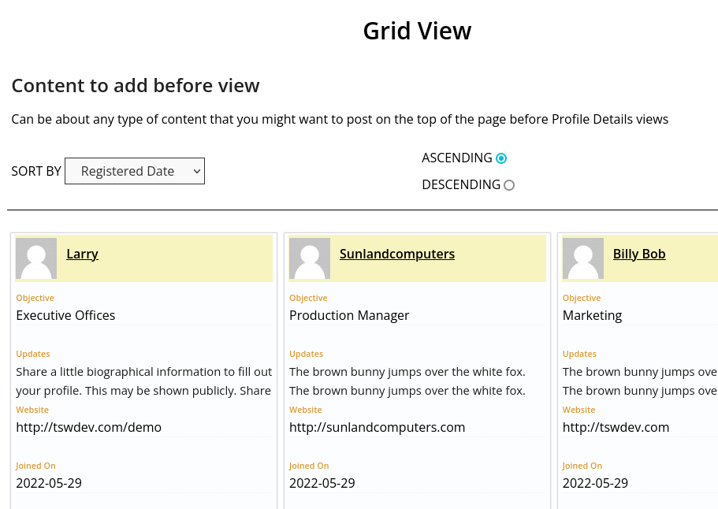

Profile Details TSW Plugin Outline
tap arrow for more info
Primary Objective
| Creates easy to view user profile details, in various views. Provides a visual map of all users registered to a site. Allows each title of each publicly displayed user field to be changed in admin panel to match the website objectives. Uses default WP fields such as avatar, nice_name, website, registered date, email as well as several additional custom fields that are created by admin. Custom categories or apportioned objectives for users profile details can also be added. |
| User Taxonomy profile-details, provides unlimited categories to be added to user profiles. |
Categories can have any name to relate to the purpose of your website usage.You can find the Category assignment page under |
| _ |
| Two Public Views as Grid and Table Views |
Grid View is an inline list of the user profiles. There are seven rows of data in each grid. The grids are basically boxes which can be set to three boxes per row or two per row.This should be the view you use for showing the users' information to the public. It has less information about the use which may be sensitive, such as user login name and last name, which otherwise can be seen in the table view.  |
Table view can be private or public. Choice can be preset by admin settings.This table view could be set to not show on the front end of the website by going into |
| _ |
| Public Profile for Users |
Limit meta to show in personal profiles.Option under Page Views tab |
Default WP User meta data includes: 'ID', 'display_name', 'user_login', 'user_nicename', 'user_email', 'user_url', 'user_registered'Most all of the information on a user that WordPress (or ClassicPress) uses will be utilized in this plugin. The user login name is part of this information and this is why we suggest to NOT SHOW the Table View to the public. Giving out user login names is fifty percent of what a hacker needs to get into the admin side of your site. We did include a CSS class name of `maybehidden` to wrap thelogin name with. You may add |
Seven specific rows of information can be assigned to each user. Every row can be named as you wish.Under the |
Email only shown on public page if Admin selects to show. Also option for individual users to hide or show their email.Checking box |
Social links can be named anything and can be used as other types of links. Could be internal links or research links.You can select how and where to show the social links by checking the best combination of choices that are best for your site experience. The three combinations of show/not-show are in the |
Getting Started |
| Instructions to help setup Profile Details TSW plugin. |
This section describes how to setup the plugin and get it working.To begin, there must be individual pages created in the page editor to be appropriated for each shortcode. Each shortcode displays particular page VIEWS. See the list below for the page views and what shortcode to add to each page. You may use as many or as few pages with the user profile details displayed on the pages according to how you feel the website should represent the users on you site. If the site will only be used to show a Table view for the Administrators then you can use only the |
1. Create pages with appropriate names and Add Shortcodes to Pages.
To display GRID view: [profile_details_grid]
To display TABLE view: [profile_details_table]
To display individual's PROFILES: [profile_details_profile]
To display CATEGORY view: [profile_details_category]
2. Optional, add CATEGORY shortcode to a widget to display categories as a list.
3. Go through settings and add field names and page view preferrences. |
Profile Details TSW Plugin Settings
Text Fields Tab
Add custom name to each titles in the page views. Leave blank for none.
| Row 1 (First Title on Public Pages and Table Views) |
| Text for first row. Can be left blank in most cases. This is the column that display the user avatar/gravatar.** |
| Row 2 Title |
| Text for second row. Person/Member maybe |
| Row 3 |
| Text for third row. Details/Objective maybe |
| Row 4 |
| Text for fifth row. Bio/Further maybe |
| Row 5 |
| Text for fifth row. Website/Forms maybe |
| Row 6 |
| Text for sixth row. Joined On maybe (Date register defaults) |
| Row 7 |
| Text for seventh row. Contact/Internal Email maybe. This field has additional controls to it. See Make Contact Private and Select Contact to Display. |
Custom Role Name |
| Name of custom role to add. Supervisor/Mediator maybe (Leave blank to not use custom role.) |
Make Contact Private |
| Check box to NOT show Email field. |
| Select Contact to Display |
| If Contact shown, select what to display. (Email on hover; Email shown-not recommended. Scrapers and spammers can copy email.; Display First Name as contact method; Display nothing at all. |
Display Social [checkbox] |
| Check box to show social links in public profiles |
| Social Link Action |
| Check box to make social links active/clickable on public side. Includes grid view and individual user pages. |
| Remove Added Social Links [checkbox] |
| Check box to remove social urls from User Panel and public side grid display. |
Page Views Tab
Advanced setting for content displayed.
| These pages must be set here so that internal forms will work correctly. Note: Several pages need to be set in this section in order for the plugin forms to know where to resolve the form submission to. It is required that you create the pages, first, and then add the following shortcodes to those pages*. |
| Select Page with user PROFILE Shortcode |
| page with shortcode: [profile_details_profile] |
| Page with GRID view Shortcode |
| shortcode: [profile_details_grid] |
| Page with TABLE view Shortcode |
| shortcode: [profile_details_table] |
| Page with CATEGORY view Shortcode |
| shortcode: [profile_details_category] |
Make TABLE view Private |
| Check box to show person table ONLY to Administrators and Editors. |
| Pagination |
| How many profiles to show per page. This is not the same as the number of Posts WordPress will showon your blog page. |
| Show Extended Info |
| Check box to show extended three fields on individual public profile. Those three fields are Company, Group and Location. There is also a setting in the user profile admin-side to allow user to select whether or not they want to show the Email field on their profiles. |
| Only show these roles |
| Select roles to show on front end. Hold CTRL to select multiple. Any role that is not selected will not be shown on the public views of your site. |
| Text in View Link |
| Wording inside of link of author grid header. |
| Background Color in Grid Heading |
| Set color for the background in grid view headers. HTML hex (#fafafa) Include the hash sign (#). You may use color names as long as they are valid. Learn more about Hex colors at: https://www.w3schools.com/colors/colors_hexadecimal |
| Title Color in Grid Heading |
| Set color for the title (H6) of each row. |
| Height Adjust Grids |
| Adjustment to make grids equal heights in pixels (exclude px, just numbers). Height will vary depending on theme used and amount of content. This setting helps offset the height of the panels in the Public View Grids. |
| Width Adjust Grids at 780px wide |
| (w/out %sign) Plugin will add the percent sign, unlike the colors adding the hash sign above. This is intentional to provide best responsive layouts. |
| Content Before Table |
| Text area for content that appears on top of Grid and all other Views.. |
| Content After Table |
| Text area for content that appears below of Grid and all other Views. |
Help Tab
| Documentation |
| This document. |
| Turn on Debug Mode |
| Can be checked to display user roles on only the table view. Mostly used to be sure your roles are working correctly. You should not need to check this unless there are some issues that you have contacted the support team about. |
| Add or Change Categories |
| Just an easy way to get to the plugin custom Categories used for the Profile Details User editor. The default link to get to is under Users > Profile Categories. |
| Custom Role Reset |
| This may be ignored unless our support team needs you to reset this (to 0). |
Questions and Tips
Frequently Asked Questions
| *What is a shortcode? |
| A shortcode is a word or phrase enclosed in brackets which display pre-coded functions on a page. To learn more about shortcodes visit: https://wordpress.com/support/shortcodes/ |
| Why is there not a way to add custom avatar to user images? |
| **We have discovered that adding new types of images to a user profile is a very personal choice. Since there are so many ways to do this and so many types of images on can use; we will leave the desicion up to you, the administrator, which can be achieved by using one of many WordPress User Avatar plugins that are available from several sources and are more designed to cover all the possible scenarios of user image usage. |
Where do I find the Settings page for this plugin? |
| In your administrator panel, once you have logged-in, go to the menu item on the sidebar menu Settings. Hover over Settings and you will see several choices. Choose Profile Details TSW. |
| Why is there not a field for phone numbers? |
It is never recommeneded to show phone numbers or direct contact lines for contacts on a website. Public posting of phone numbers is an invitation for identity theft. If you must add phone numbers to the profiles of this plugin, try adding the numbers inside or after one of the three extended fields (Show Extended Info option). This way you can hide them if you decide you are getting too many spam calls. Check box to show extended three fields on individual public profile. |
Helper Functions
| Function | Purpose |
|---|---|
| Found in public/profile-details-public-helpers | |
| profile_details_tsw_contact_body_class($classes) | Add body_class if contact details are hidden on public grid. @uses profile_details_tsw_contact_privi() @returns Boolean |
| pdtswget_author_meta($meta_key, $profile_id) | Get author meta for single profile page. @param string $meta_key Meta key. @param string $profile_id ID of user. |
| > | |
| profile_details_tsw_get_tableview_page() | Get option url. Page that is saved as Select Page with Tableview Shortcode. |
| profile_details_tsw_table_privi, profile_details_tsw_contact_privi | Check if Not viewable to public @return Boolean |
| > | |
| profile_details_tsw_get_author_page() | |
| profile_details_tsw_contact_selected | |
| profile_details_tsw_get_category_page() | |
| > | |
| profile_details_tsw_thead_1, profile_details_tsw_thead_2, profile_details_tsw_thead_3, profile_details_tsw_thead_4, profile_details_tsw_thead_5 | |
| profile_details_tsw_admin_assigns() | |
| profile_details_tsw_table_private() | |
| profile_details_tsw_is_site_admin() | |
| profile_details_tsw_social_urls() | |
| profile_details_tsw_social_anchor() | |
| profile_details_tsw_social_privi() | |
| profile_details_tsw_contact_privi() | |
| profile_details_tsw_gridhead() | |
| profile_details_tsw_viewlink() | |
| profile_details_tsw_contact_selected() | |
| profile_details_tsw_contact_html() | |
| profile_details_tsw_contact_display() | |
| profile_details_tswget_select_roles() | |
| profile_details_gettsw_pagination() | |
| profile_details_tsw_before_block() | |
| profile_details_tsw_after_block() | |
| pdtswget_editfront_author($current_user_id) | |
| profile_details_tsw_allow_avatar() | |
| profile_details_tsw_extend_info() | |
| pdtsw_user_roles_by_id( $id ) | |
| pdtswset_debug_mode() | |
Action Hooks
| Developer Helpers |
| Functions in profile-details-public-functions |
add_filter( 'user_contactmethods', 'profile_details_tsw_social_author_profile', 10, 1); |
| > |
add_action( 'edit_user_profile', 'profile_details_tsw_extra_profile_info' );and show_user... |
add_action( 'personal_options_update', 'profile_details_tsw_save_profile_info' ); add_action( 'edit_user_profile_update', 'profile_details_tsw_save_profile_info' ); |
/* Add section to the edit user page in the admin to select profile_detail. */ add_action( 'show_user_profile', 'profile_details_tsw_edit_user_profile_details_section' ); add_action( 'edit_user_profile', 'profile_details_tsw_edit_user_profile_details_section' ); |
| > |
/* Update the profile_details terms when the edit user page is updated. */ add_action( 'personal_options_update', 'profile_details_tsw_save_user_profile_details_terms' ); add_action( 'edit_user_profile_update', 'profile_details_tsw_save_user_profile_details_terms' ); |
Inline style only display on proper page. add_action('wp_head', 'profile_details_tsw_inline_page_styles'); |